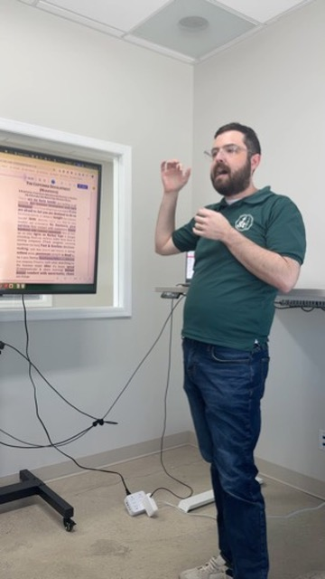
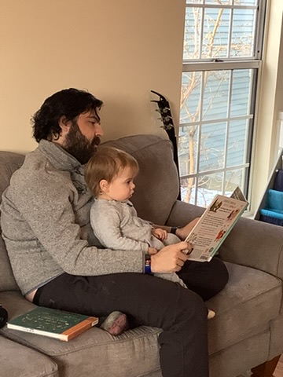
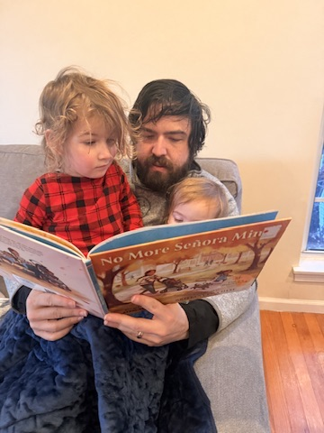
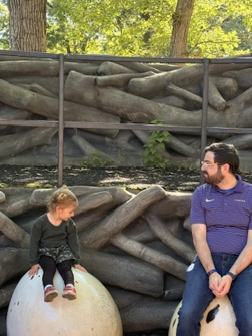
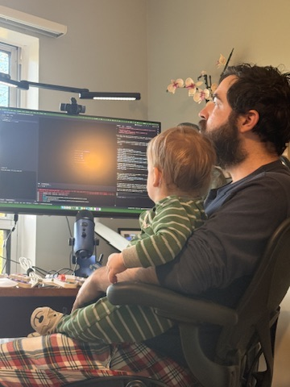

About
More than the resume.
The work is on the other pages. This one is about the person doing it — the father, the builder, the leader who still shows up as all three at once.

The work is on the other pages. This one is about the person doing it — the father, the builder, the leader who still shows up as all three at once.
Jefferson became a father the same way he builds everything else — all in, no shortcuts. He and his wife Juliana co-founded F&T Labs together, which means that most mornings, the boardroom and the breakfast table are the same room. His kids have been on client calls. They've watched him debug architecture at the kitchen table he built himself. They know what their dad does and why it matters — because he tells them.
That is not a liability. That is the operating philosophy made visible: Jefferson does not compartmentalize the things he cares about. He brings his full self to the work, and his full self includes two kids whose names both start with J, a rescued greyhound named Teddy, Saturday pizza with his daughter, and Sunday tacos with homemade tortillas.
He started as a pilot. Human factors in aviation is the science of what happens when a system fails a human being — and the question of how to design systems that don't. That question followed him out of the cockpit and into every role that came after: pediatric GIS at Children's National, clinical decision support at Northwestern, public health infrastructure at Lake County. The thread is always the same. Where does the system break the person? How do we fix it before someone gets hurt?
He was also a volunteer EMT and firefighter in Virginia — which means he understands clinical operations not from a diagram, but from the back of an ambulance. That context never left him. When he talks about health equity, he is not speaking abstractly. He has been the person who shows up.
He builds furniture. He built the kitchen table. The woodshop is where he thinks through problems that don't have obvious solutions yet. The discipline of joinery — measuring twice, cutting once, not forcing pieces to fit that weren't designed to — is the same discipline he brings to system architecture.
He is an active member of his faith community and a Board Member of the Lake County Forest Preserve Foundation. He coaches, mentors, and shows up for the people in his orbit the same way he showed up to design AllVax: with equity as the constraint, not the afterthought.





These are direct quotes from people who have worked alongside Jefferson — managers, direct reports, and cross-functional partners — across four different organizations and fifteen years of work.